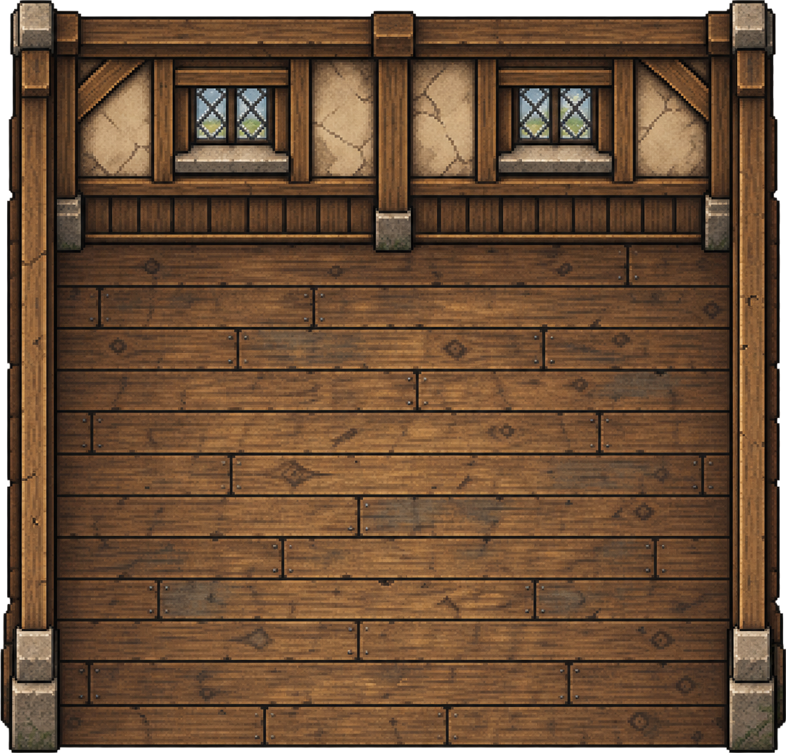

YUUKI / REVISÃO DO PROTÓTIPO
Um lugar para voltar.
Frente, costas e os dois lados da Yuuki, com o cajado guardado durante o descanso. A casa agora abre no próprio mapa do jogo.
Nova revisão: casas divididas, sobrados, quintais, galinhas e os designs de Alice e Tenebris.
Movimento e descanso
Carregando os quadros…
Asa esquerda anatômica preta, direita branca. Não há espelhamento automático. O descanso utiliza somente três desenhos por direção.
A casa por dentro

A porta abre e a fachada desaparece aos poucos, revelando o cômodo e os móveis no mesmo lugar. Entre caminhando para cima na porta; saia caminhando para baixo.